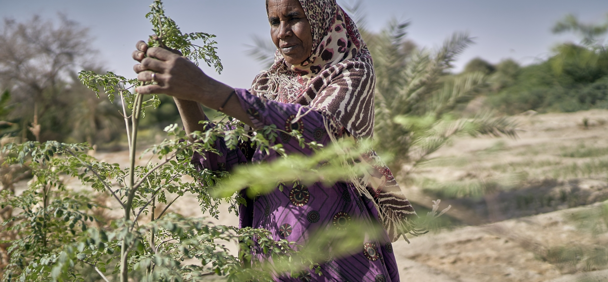

posted by Gary Bachor on February 17, 2022
From staple crops like potatoes and maize, to cash crops for wealthier customers like cocoa and coffee, climate change is having widespread impacts on global agricultural production. There is growing consensus that climate change is already affecting crop yields and food security, but not all crops are equally at risk.
While researchers warn that overall crop yields will decrease due to a warming climate, changing rainfall patterns and severe weather, surprisingly, some crops may see yield increases. For example, a 2019 study from the University of Minnesota found that yields of crops like rice and wheat are already on the decline, while harvests of sorghum, which is more drought-tolerant, rose during the same period.
It’s not just weather that will impact crop yields. As the climate warms and changes, pests and diseases are spreading more widely, which adds another layer of unpredictability to farming.
Post-harvest storage also may become more challenging as rising temperatures make it more likely that insects or mold will destroy crops that are stored outdoors or in protected, but not cooled areas.
The climate crisis also is expected to increase malnutrition by reducing nutrient availability and the quality of food, while increasing prices. Higher temperatures and increased concentrations of CO2 in the air lead to lower levels of nutrients like iron, zinc and protein in crops such as soy, wheat and rice. This issue is especially troubling in poor countries with less food diversity and where people rely on one or two staple foods for their nutrition.
Here’s how climate change may impact eight key crops, which provide livelihoods to millions of small-holder farmers, and are vital sources of calories and culture for billions of people around the world.
Maize: Also known as corn, the global production of maize will likely see a massive reduction by 2050 due to temperature variations and decreased, unreliable rainfall. All major growing areas -- like the U.S. and Brazil -- will be impacted by this change. Small-holder farmers are especially dependent on regular rainfall to grow maize, and climate change is already disturbing the typical rainfall patterns. In places like Mozambique, where corn is grown for local consumption, this will likely be devastating.
Wheat: In cooler regions like North America and Europe, wheat production may see a more than 5% increase in yields, rainfall permitting. Yet, in more vulnerable areas like India, Central America, and Africa, yields may decrease by 3% or more. As India produces 14% of the world’s wheat, the decreased production in hotter and drier growing regions will have a significant impact on India’s wheat farming families, and on the millions who rely on them for sustenance.
Rice: For more than 3.5 billion people, rice provides 20% or more of their daily calories, and demand is increasing. Yet, rice yields globally may drop by more than 5.5% if temperatures rise by 1.5 degrees. Some estimates predict yields could drop 11% by 2050. Farmers across Asia--including the major population centers of China, India, and Vietnam--and in Africa--where Nigeria is the continent’s biggest rice producer-- will be hard-hit. In Bangladesh, farmers have already suffered rice crop losses due to heat waves and low rainfall in the growing season, which led to the destruction of over 168,000 acres of rice. Coastal fields at sea level are especially at risk from rising sea levels, when seawater can inundate the dry land, damaging or destroying the rice crops.
Soy: The growing popularity of soy is driving deforestation that contributes to higher carbon levels. This trend is most noticeable in South America, where farmers are increasing soy production to export to China and to meet the growing demand for industrial animal feed. The effects of climate change on soybean yields are mixed, as researchers find that soybean plants respond favorably to higher concentrations of CO2 in the air. Soybean yields also may increase if farmers switch from other crops, such as wheat, or expand into previously forested lands -- which is happening in the Amazon and may occur in areas that today are too cool for soy production, like New York State and into southern Canada. Yet, even if harvests increase in the near term, most scientists project that yields will decrease later this century as heat and water stresses intensify.
Potatoes: By 2050, the global production of potatoes could decrease by as much as 9%. As potatoes need a steady supply of water to grow, fewer areas will be suitable for potato production. In potato-growing places that rely on melting mountain snowpack, like Idaho, or a steady rainy season, like Bolivia, farmers will need to adapt varieties or invest in irrigation to maintain production.
Bananas and Plantains: These similar products are grown in the tropics as cash crops or as local food sources. Researchers found that due to rising temperatures over the past 20 years, plantain production fell by 43%. Popular varieties of bananas also are threatened by diseases, like black leaf streak, which can spread faster and further in hotter weather. Yet projected weather changes also could mean more land on which to grow bananas and plantains by 2070.
Cocoa: Demand for chocolate is growing, and it’s unlikely that cocoa production will be able to keep up. Cote d’Ivoire and Ghana in west Africa are responsible for half the world’s cocoa production, and the region is already experiencing erratic rainfall and hot winds. Cocoa beans only grow well in very specific conditions. They like consistent temperatures, high humidity, and regular rainfall. Rising temperatures are driving cocoa production to higher elevations, where there is simply less land -- or where cultivation could mean deforestation.
Coffee: Coffee is a valuable export crop for many small-holder farmers who rely on the income to buy food and supplies for their families. In major coffee exporting nations, the crop provides economic opportunity throughout the country through farming, processing, trade, finance and related roles -- which all could be at risk. Ethiopia, which is Africa’s top coffee producer, could potentially lose 25% of its coffee yields by 2030.
So, what can be done? To avoid disruptions of supply, higher prices, and more hungry people, farmers may need to expand production or adopt new techniques to achieve the same yield. Some climate-specific crops, like coffee, may need to be grown in new areas. Farmers also might need to start growing more resilient and climate-appropriate varieties of familiar crops, or new kinds of foods altogether.
At Feed Someone Today, we're teaching farmers climate-smart growing techniques and introducing climate-resilient crops to help them make the most of their dwindling resources. We’re using agroecological approaches, which improve efficiency and enhance natural ecosystems. At our farmer field schools, farmers can experiment and practice what they've learned on demonstration plots before applying the lessons to their own land.
Consumer tastes might need to evolve too, as a changing climate can mean adapting to new foods and a changing menu for billions around the world.
It takes time to help farmers find and prepare the land and successfully adapt by learning about new crops and new growing techniques -- and for people everywhere to learn new ways of shopping and eating. But if we start now, we can sow the seeds for sustainability while there is still time.